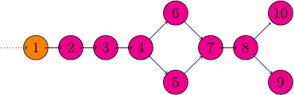

Real-Time Streaming with Apache Storm and Apache Kafka
Table of Contents
The following post is one in the series of real-time systems tangential to the Hadoop ecosystem. First, exploring both Apache Storm and Apache Kafka as a part of a real-time processing engine. These two systems work together very well and make for an easy development experience while still being very performant.
About Kafka
Apache Kafka is a message queue rethought as a distributed commit log. It follows the publish-subscribe messaging style, with speed and durability built in.
Kafka uses Zookeeper to share and save state between brokers. Each broker maintains a set of partitions: primary and/ or secondary for each topic. A set of Kafka brokers working together will maintain a set of topics. Each topic has its partitions distributed over the participating Kafka brokers and, as of Kafka version 0.8, the replication factor determines, intuitively, the number of times a partition is duplicated for fault tolerance.
While many brokered message queue systems have the broker maintain the state of its consumers, Kafka does not. This frees up resources for the broker to ingest data faster. For more information about Kafka's performance see Benchmarking Kafka.
Initial Thoughts
Kafka is a very promising project, with astounding throughput and one of the easiest pieces of software I have had the joy of installing and configuring. Although Kafka is not at the production 1.0 stable release yet, it's well on its way.
About Storm
Apache Storm, currently in incubation, is a real-time computational engine made available under the free and open-source Apache version 2.0 license. It runs continuously, consuming data from the configured sources (Spouts) and passes the data down the processing pipeline (Bolts). Combined, Spouts and Bolts make a Topology. A topology can be written in any language including any JVM based language, Python, Ruby, Perl, or, with some work, even C. See the Storm multi-lingual documentation.
Why Storm
Quoting from the project site:
Storm has many use cases: realtime analytics, online machine learning, continuous computation, distributed RPC, ETL, and more. Storm is fast: a benchmark clocked it at over a million tuples processed per second per node. It is scalable, fault-tolerant, guarantees your data will be processed, and is easy to set up and operate. Storm Homepage
Integration
Storm can integrate with any queuing and any database system. In fact, there are already quite a few existing projects for use to integrate Storm with other projects, like kestrel or Kafka.
Initial Thoughts
I found Storm's verbiage around the computational pipeline to fit my mental model very well, thinking about streaming computational processes as directed acyclic graphs makes a lot of intuitive sense. That said, although I haven't been developing against Storm for very long, I do find some integration tasks to be slightly awkward. For example, writing an HDFS file writer bolt requires some special considerations given bolt life cycles and HDFS writing patterns. This is really only a minor blemish however, as it only means the developers of Storm topologies have to understand the API more intimately; there are already common patterns emerging that should be adaptable to about any situation.
Test Project: Twitter Stream Sentiment Analysis
To really give Storm a try, something a little more involved than just a simple word counter is needed. Therefore, I have put together a Twitter Sentiment Analysis topology. Though this is a good representative example of a more complicated topology, the method used for actually scoring the Twitter data is overly simple.
Setup
The setup used for this demo is a 5 node Vagrant virtual cluster. Each node is
running 64 bit CentOS 6.5, given 1 core, and 1024MB of RAM. Every node is
running HDFS (datanode), Zookeeper, and Kafka. The first node, node0, is the
namenode, and Nimbus – Storm's master daemon. node0 is also running a
Docker container with a NodeJS application, part of the reporting
process. The remaining nodes, node[1-4], are Storm worker nodes. Storm,
Kafka, and Zookeeper are all run under supervision via
Supervisord, so High-Availability is baked into this virtual
cluster.
Overview

I wrote a simple Kafka producer that reads files off disk and sends them to the Kafka cluster. This is how we feed the whole system and is used in lieu of opening a stream to Twitter.
Spout
The orange node from the picture is our
KafkaSpout that will be consuming incoming
messages from the Kafka brokers.
Twitter Data JSON Parsing
The first bolt, 2 in the image, attempts to parse the Twitter JSON data and
emits tweet_id and tweet_text. This implementation only processes English
tweets. If the topology were to be more ambitious, it may pass the language
code down and create different scoring bolts for each language.
Filtering and Stemming
This next bolt, 3, performs first-round data sanitization. That is, it
removes all non-alpha characters.
Following, the next round of data cleansing, 4, is to remove common words to
reduce noise for the classifiers. These common words are usually referred to
as stop words. Stemming, or considering suffixes to
match the root, could also be performed here, or in another, later bolt.
4, when finished, will then broadcast the data to both of the classifiers.
Classifiers
Each classifier is defined by its own bolt. One classifier for the positive
class, 5, and another for the negative class, 6.
The implementation of the classifiers follows the Bag-of-words model.
Join and Scoring
Next, bolt 7 joins the scores from the two previous classifiers. The
implementation of this bolt isn't perfect. For example, message transaction is
not guaranteed: if one-side of the join fails, neither side is notified.
To finish up the scoring, bolt 8 compares the scores from the classifiers and
declares the class accordingly.
Reporting: HDFS and HTTP POST
Finally, the scoring bolt broadcasts off the results to a HDFS file writer
bolt, 9, and a NodeJS notifier bolt, 10. The HDFS bolt fills a list until
it has 1000 records in it and then spools to disk. Of course, like the join
bolt, this could be better implemented to fail input tuples if the bolt fails
to write to disk or have a timeout to write to disk after a certain period of
time. The NodeJs notifier bolt, on the other hand, sends a HTTP POST each time
a record is received. This could be batched as well, but again, this is for
demonstration purposes only.
Implementing the Kafka Producer
Here, the main portions of the code for the Kafka producer that was used to test our cluster are defined.
In the main class, we setup the data pipes and threads:
LOGGER.debug("Setting up streams"); PipedInputStream send = new PipedInputStream(BUFFER_LEN); PipedOutputStream input = new PipedOutputStream(send); LOGGER.debug("Setting up connections"); LOGGER.debug("Setting up file reader"); BufferedFileReader reader = new BufferedFileReader(filename, input); LOGGER.debug("Setting up kafka producer"); KafkaProducer kafkaProducer = new KafkaProducer(topic, send); LOGGER.debug("Spinning up threads"); Thread source = new Thread(reader); Thread kafka = new Thread(kafkaProducer); source.start(); kafka.start(); LOGGER.debug("Joining"); kafka.join();
The BufferedFileReader in its own thread reads off the data from disk:
rd = new BufferedReader(new FileReader(this.fileToRead)); wd = new BufferedWriter(new OutputStreamWriter(this.outputStream, ENC)); int b = -1; while ((b = rd.read()) != -1) { wd.write(b); }
Finally, the KafkaProducer sends asynchronous messages to the Kafka Cluster:
rd = new BufferedReader(new InputStreamReader(this.inputStream, ENC)); String line = null; producer = new Producer<Integer, String>(conf); while ((line = rd.readLine()) != null) { producer.send(new KeyedMessage<Integer, String>(this.topic, line)); }
Doing these operations on separate threads gives us the benefit of having disk reads not block the Kafka producer or vice-versa, enabling maximum performance tunable by the size of the buffer.
Implementing the Storm Topology
Topology Definition
Moving onward to Storm, here we define the topology and how each bolt will be talking to each other:
TopologyBuilder topology = new TopologyBuilder(); topology.setSpout("kafka_spout", new KafkaSpout(kafkaConf), 4); topology.setBolt("twitter_filter", new TwitterFilterBolt(), 4) .shuffleGrouping("kafka_spout"); topology.setBolt("text_filter", new TextFilterBolt(), 4) .shuffleGrouping("twitter_filter"); topology.setBolt("stemming", new StemmingBolt(), 4) .shuffleGrouping("text_filter"); topology.setBolt("positive", new PositiveSentimentBolt(), 4) .shuffleGrouping("stemming"); topology.setBolt("negative", new NegativeSentimentBolt(), 4) .shuffleGrouping("stemming"); topology.setBolt("join", new JoinSentimentsBolt(), 4) .fieldsGrouping("positive", new Fields("tweet_id")) .fieldsGrouping("negative", new Fields("tweet_id")); topology.setBolt("score", new SentimentScoringBolt(), 4) .shuffleGrouping("join"); topology.setBolt("hdfs", new HDFSBolt(), 4) .shuffleGrouping("score"); topology.setBolt("nodejs", new NodeNotifierBolt(), 4) .shuffleGrouping("score");
Notably, the data is shuffled to each bolt until except when joining, as it's very important that the same tweets are given to the same instance of the joining bolt. To read more about stream groupings, visit the Storm documentation.
Twitter Data Filter / Parser
Parsing the Twitter JSON data is one of the first things that needs to be done. This is accomplished with the use of the JacksonXML Databind library.
JsonNode root = mapper.readValue(json, JsonNode.class); long id; String text; if (root.get("lang") != null && "en".equals(root.get("lang").textValue())) { if (root.get("id") != null && root.get("text") != null) { id = root.get("id").longValue(); text = root.get("text").textValue(); collector.emit(new Values(id, text)); } else LOGGER.debug("tweet id and/ or text was null"); } else LOGGER.debug("Ignoring non-english tweet");
As mentioned before, tweet_id and tweet_text are the only values being
emitted.
This is just using the basic ObjectMapper class from the Jackson Databind
library to map the simple JSON object provided by the Twitter Streaming API to
a JsonNode. The language code is first tested to be English, as the topology
does not support non-English tweets. The new tuple is emitted down the Storm
pipeline after ensuring the existence of the desired data, namely, tweet_id,
and tweet_text.
Text Filtering
As previously mentioned, punctuation and other symbols are removed because they are just noise to the classifiers:
Long id = input.getLong(input.fieldIndex("tweet_id")); String text = input.getString(input.fieldIndex("tweet_text")); text = text.replaceAll("[^a-zA-Z\\s]", "").trim().toLowerCase(); collector.emit(new Values(id, text));
Very common words are also removed because they are similarly noisy to the classifiers:
Long id = input.getLong(input.fieldIndex("tweet_id")); String text = input.getString(input.fieldIndex("tweet_text")); List<String> stopWords = StopWords.getWords(); for (String word : stopWords) { text = text.replaceAll(word, ""); } collector.emit(new Values(id, text));
Here the StopWords class is a singleton holding the list of words we wish to
omit.
Positive and Negative Scoring
Since the approach for scoring is based on a very limited Bag-of-words model, Each class is put into its own bolt; this also contrives the need for a join later.
Positive Scoring:
Long id = input.getLong(input.fieldIndex("tweet_id")); String text = input.getString(input.fieldIndex("tweet_text")); Set<String> posWords = PositiveWords.getWords(); String[] words = text.split(" "); int numWords = words.length; int numPosWords = 0; for (String word : words) { if (posWords.contains(word)) numPosWords++; } collector.emit(new Values(id, (float) numPosWords / numWords, text));
Negative Scoring:
Long id = input.getLong(input.fieldIndex("tweet_id")); String text = input.getString(input.fieldIndex("tweet_text")); Set<String> negWords = NegativeWords.getWords(); String[] words = text.split(" "); int numWords = words.length; int numNegWords = 0; for (String word : words) { if (negWords.contains(word)) numNegWords++; } collector.emit(new Values(id, (float)numNegWords / numWords, text));
Similar to StopWords, PositiveWords and NegativeWords are both singletons
maintaining lists of positive and negative words, respectively.
Joining Scores
Joining in Storm isn't the most straight forward process to implement, although the process may be made simpler with the use of the Trident API. However, to get a feel for what to do without Trident and as an Academic exercise, the join is not implemented with the Trident API. On related note, this join isn't perfect! It ignores a couple of issues, namely, it does not correctly fail a tuple on a one-sided join (when tweets are received twice from the same scoring bolt) and doesn't timeout tweets if they are left in the queue for too long. With this in mind, here is our join:
Long id = input.getLong(input.fieldIndex("tweet_id")); String text = input.getString(input.fieldIndex("tweet_text")); if (input.contains("pos_score")) { Float pos = input.getFloat(input.fieldIndex("pos_score")); if (this.tweets.containsKey(id)) { Triple<String, Float, String> triple = this.tweets.get(id); if ("neg".equals(triple.getCar())) emit(collector, id, triple.getCaar(), pos, triple.getCdr()); else { LOGGER.warn("one sided join attempted"); this.tweets.remove(id); } } else this.tweets.put( id, new Triple<String, Float, String>("pos", pos, text)); } else if (input.contains("neg_score")) { Float neg = input.getFloat(input.fieldIndex("neg_score")); if (this.tweets.containsKey(id)) { Triple<String, Float, String> triple = this.tweets.get(id); if ("pos".equals(triple.getCar())) emit(collector, id, triple.getCaar(), neg, triple.getCdr()); else { LOGGER.warn("one sided join attempted"); this.tweets.remove(id); } } else this.tweets.put( id, new Triple<String, Float, String>("neg", neg, text)); }
Where emit is defined simply by:
private void emit( BasicOutputCollector collector, Long id, String text, float pos, float neg) { collector.emit(new Values(id, pos, neg, text)); this.tweets.remove(id); }
Deciding the Winning Class
To ensure the Single responsibility principle is not violated, joining and scoring are split into separate bolts, though the class of the tweet could certainly be decided at the time of joining.
Long id = tuple.getLong(tuple.fieldIndex("tweet_id")); String text = tuple.getString(tuple.fieldIndex("tweet_text")); Float pos = tuple.getFloat(tuple.fieldIndex("pos_score")); Float neg = tuple.getFloat(tuple.fieldIndex("neg_score")); String score = pos > neg ? "positive" : "negative"; collector.emit(new Values(id, text, pos, neg, score));
This decider will prefer negative scores, so if there is a tie, it's automatically handed to the negative class.
Report the Results
Finally, there are two bolts that will yield results: one that writes data to HDFS, and another to send the data to a web server.
Long id = input.getLong(input.fieldIndex("tweet_id")); String tweet = input.getString(input.fieldIndex("tweet_text")); Float pos = input.getFloat(input.fieldIndex("pos_score")); Float neg = input.getFloat(input.fieldIndex("neg_score")); String score = input.getString(input.fieldIndex("score")); String tweet_score = String.format("%s,%s,%f,%f,%s\n", id, tweet, pos, neg, score); this.tweet_scores.add(tweet_score); if (this.tweet_scores.size() >= 1000) { writeToHDFS(); this.tweet_scores = new ArrayList<String>(1000); }
Where writeToHDFS is primarily given by:
Configuration conf = new Configuration(); conf.addResource(new Path("/opt/hadoop/etc/hadoop/core-site.xml")); conf.addResource(new Path("/opt/hadoop/etc/hadoop/hdfs-site.xml")); hdfs = FileSystem.get(conf); file = new Path( Properties.getString("rts.storm.hdfs_output_file") + this.id); if (hdfs.exists(file)) os = hdfs.append(file); else os = hdfs.create(file); wd = new BufferedWriter(new OutputStreamWriter(os, "UTF-8")); for (String tweet_score : tweet_scores) { wd.write(tweet_score); }
And our HTTP POST to a web server:
Long id = input.getLong(input.fieldIndex("tweet_id")); String tweet = input.getString(input.fieldIndex("tweet_text")); Float pos = input.getFloat(input.fieldIndex("pos_score")); Float neg = input.getFloat(input.fieldIndex("neg_score")); String score = input.getString(input.fieldIndex("score")); HttpPost post = new HttpPost(this.webserver); String content = String.format( "{\"id\": \"%d\", " + "\"text\": \"%s\", " + "\"pos\": \"%f\", " + "\"neg\": \"%f\", " + "\"score\": \"%s\" }", id, tweet, pos, neg, score); try { post.setEntity(new StringEntity(content)); HttpResponse response = client.execute(post); org.apache.http.util.EntityUtils.consume(response.getEntity()); } catch (Exception ex) { LOGGER.error("exception thrown while attempting post", ex); LOGGER.trace(null, ex); reconnect(); }
There are some faults to point out with both of these bolts. Namely, the HDFS
bolt tries to batch the writes into 1000 tweets, but does not keep track of the
tuples nor does it time out tuples or flush them at some interval. That is, if
a write fails or if the queue sits idle for too long, the topology is not
notified and can't resend the tuples. Similarly, the HTTP POST, does not
batch and sends each POST synchronously causing the bolt to block for each
message. This can be alleviated with more instances of this bolt and more web
servers to handle the increase in posts, and/ or a better batching process.
Summary
The full source of this test application can be found on Github.
Apache Storm and Apache Kafka both have great potential in the real-time streaming market and have so far proven themselves to be very capable systems for performing real-time analytics.
Stay tuned, as the next post in this series will be an overview look at Streaming with Apache Spark.
Related Links / References
- Apache Storm Project Page
- Storm Multi-Language Documentation
- Apache Kafka Project Page
- LinkedIn Kafka Benchmarking: 2 million writes per second
- Storm Integration Documentation
- Supervisord Project Page
- Docker IO Project Page
- Storm-Kafka Source
- Full Source of Test Project
- Apache Storm Incubation Proposal
- Jackson Databind Project Bag
- Wikipedia: Bag of words
- Storm Trident API Overview
- Wikipedia: Single responsibility principle
- Wikipedia: Stemming
- Storm Documentation: Common Patterns
- Stream Groupings